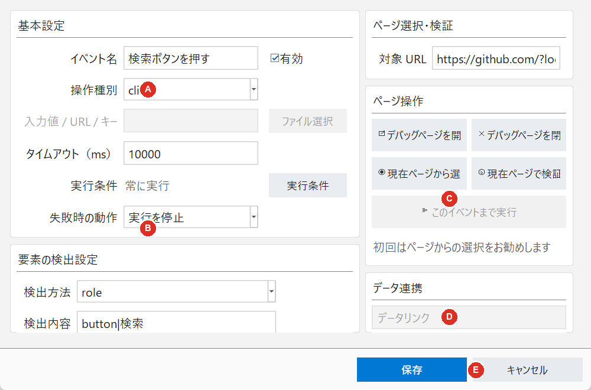

ブラウザーで行う一つの操作を登録します。操作種別に応じて、使用できる欄が変わります。

| ボタン | 操作内容 |
|---|---|
| ファイル選択 | upload_file で使用する固定ファイルを選びます。 |
| 実行条件 | このイベントを実行する条件を設定します。 |
| デバッグページを開く/表示 | 対象 URL をデバッグ用 Chrome で開くか、前面に表示します。 |
| デバッグページを閉じる | デバッグ用 Chrome を閉じます。 |
| 現在ページから選択 | ページ上の対象を選び、検出方法と検出内容を自動設定します。 |
| 現在ページで検証 | 登録した検出内容で対象が一意に見つかるか確認します。 |
| このイベントまで実行 | 先行イベントを実行し、対象イベントの直前で停止します。 |
| 構造から選択 | 入力値または取得値を共通データの項目と結び付けます。 |
| クリア | 設定中のデータリンクを外します。 |
| 保存／キャンセル | 設定を確定して閉じる／変更を保存せず閉じる操作です。 |
「操作種別」を選ぶと、その操作で必要な入力欄だけが有効になります。対象要素を操作するイベントでは、先にデバッグページを開き、 で対象を設定する方法を推奨します。
| 操作種別 | 設定する項目 | 入力例 | 動作と登録時の注意 |
|---|---|---|---|
goto | 値、タイムアウト | https://example.com/login | 「値」に入力した URL を開きます。対象要素と検出方法は設定しません。 |
click | 検出方法、検出内容、タイムアウト | role ／ button|ログイン | ボタン、リンク、チェックボックスなどをクリックします。検証結果が1件になるように設定します。 |
fill | 検出方法、検出内容、値、タイムアウト | label ／ メールアドレス ／ sample@example.com | 入力欄の現在値を消してから「値」を入力します。「構造から選択」で共通データの値を使用できます。 |
select | 検出方法、検出内容、値、タイムアウト | label ／ 都道府県 ／ 13 | HTML の選択リストから項目を選びます。「値」には通常、対象 option の value を入力します。共通データとの連携も可能です。 |
wait | 検出方法、検出内容、タイムアウト | text ／ 登録が完了しました | 指定した対象が一意に操作可能な状態で見つかることを確認します。固定時間の待機には pause を使用します。 |
press | 検出方法、検出内容、値、タイムアウト | Enter | 対象要素にキーを送ります。「値」には Enter、Tab、Escape、ArrowDown、Control+A などを入力できます。 |
get_text | 検出方法、検出内容、値、タイムアウト | order_number | 対象のテキストを取得します。「値」に英字またはアンダースコアから始まる変数名を入力すると、後続イベントで ${order_number} として使用できます。「構造から選択」を使うと共通データの項目へ保存します。 |
screenshot | 値 | result.png | ページ全体を実行単位の artifacts フォルダーへ保存します。「値」を空欄にすると自動ファイル名になります。対象要素は設定しません。 |
pause | 値、タイムアウト | 1500 | 指定ミリ秒だけ待機します。例の 1500 は1.5秒です。「値」が空欄の場合はタイムアウトの値を待機時間として使用します。 |
upload_file | 検出方法、検出内容、値、タイムアウト | files\sample.xlsx | input type="file" を指定し、ファイルを設定します。 で固定ファイルを選べます。相対パスはプログラムのフォルダーを基準にします。共通データからパスを受け取ることもできます。 |
繰り返しと再試行は普通のイベント種別ではありません。メイン画面の から登録します。
3 を指定すると、最初の実行に失敗した後、最大3回再試行します。| 目的 | press の「値」 |
|---|---|
| Enter キーで確定・送信 | Enter |
| 次の入力欄へ移動 | Tab |
| ダイアログを閉じる | Escape |
| 候補を一つ下へ移動 | ArrowDown |
| 入力内容を全選択 | Control+A |
| 全選択して削除 | Control+A のイベントの後に、別の press イベントで Backspace |
${変数名} を入力できます。例：https://example.com/orders/${order_number}。ただし、get_text の「値」は保存先の変数名として扱われます。